Hirel 2008

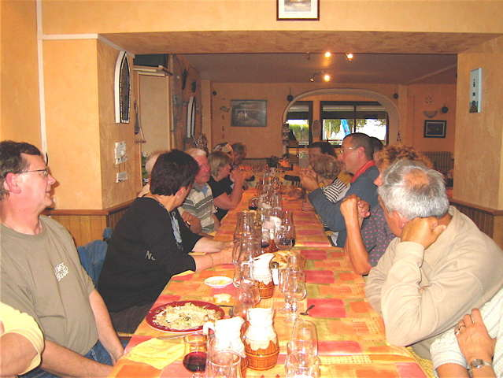
Vendredi soir, Hirel... Le CVCCeltique a déjà bien travaillé avant notre arrivée. Mais ce soir, dîner tranquille au restaurant avec suivi des arrivants : "Ils sont à moins de 2 h, d' 1 h"...

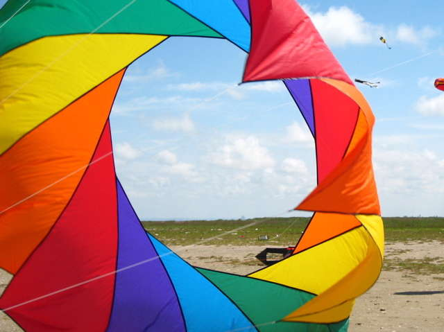
Au petit matin, découverte de la plage : spéciale, la mer est à 1 km à marée basse avec un estran plutôt vaseux, et à 100 m à marée haute. Le reste est plat, dur, caillouteux et herbeux. Dans le bol de Patrick, le Mont-Saint-Michel, au loin....

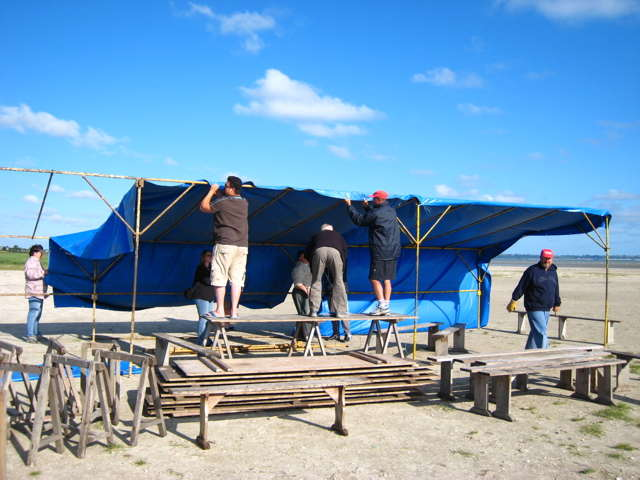
On termine les équipements, les bâches sont d'un poids incroyable...

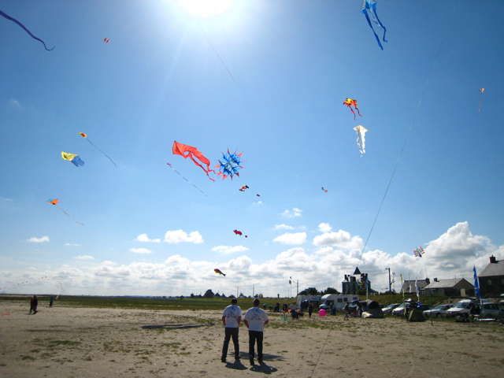
Mais les cerfs-volants n'attendent pas, et il y a déjà un beau tableau en l'air...

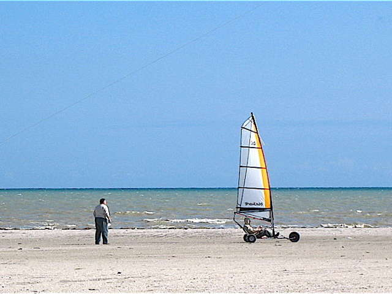
Philippe Burger a amené sa valise et a monté son Blo-kart qu'il prête généreusement à tout le monde ! Eh bien il est solide, c'est du sérieux, personne ne l'a cassé, et pourtant !

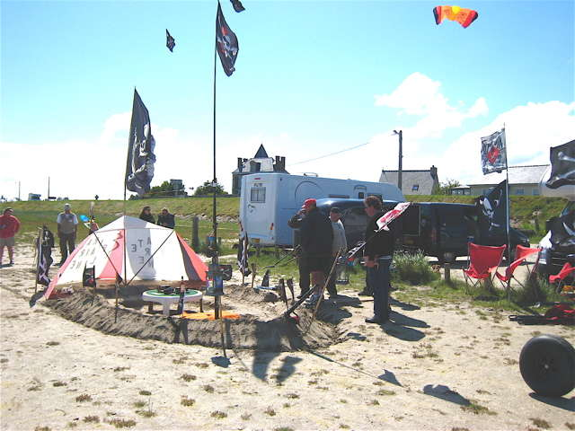
Les Pirates sont là et ont aménagé un bateau Casino avec table de jeux (c'est le thème cette année) !

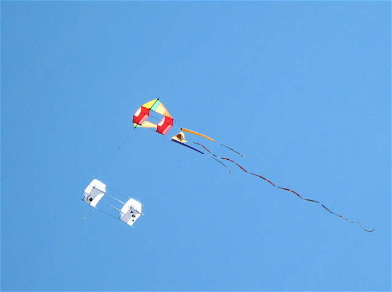
Dans le ciel, ça s'active ! Un Madiot-CVCF traîne vaillamment un paquet de queues au-dessus d'une boîte losangique...

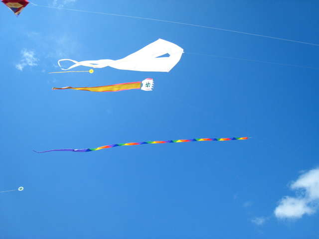
Plus haut que le pyro blanc, Bruno Claes a agrémenté son flow-form de sa belle queue dorée et y a ajouté une queue tubulaire bien gonflée et colorée...

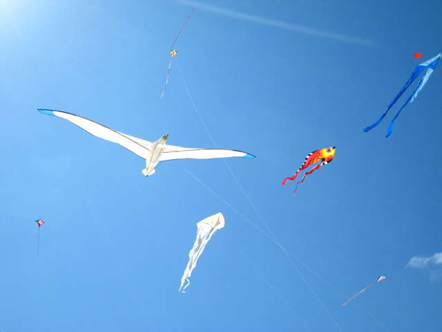
J'ai choisi mon Albatros 2, pour vérifier quelques modifs mineures. Après un peu de réglages à la main, il vole bien, mais pas encore parfaitement symétrique...

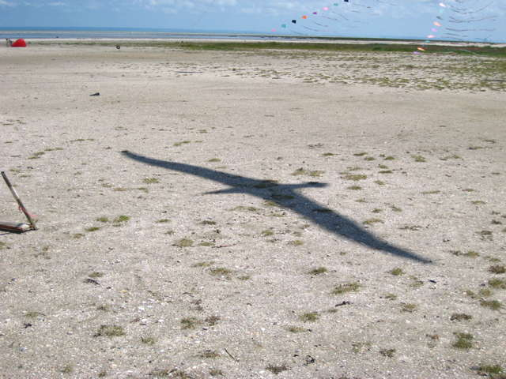
Sur le magnifique sable d'Hirel, la preuve qu'il vole au soleil !...

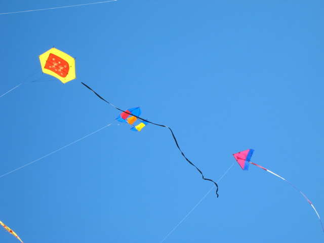
Un Rokka aux armes normandes (2 léopards), un Conyne à ailes multiples (à Pascal), et le delta de Christophe, limité mais si gentil et enthousiaste !

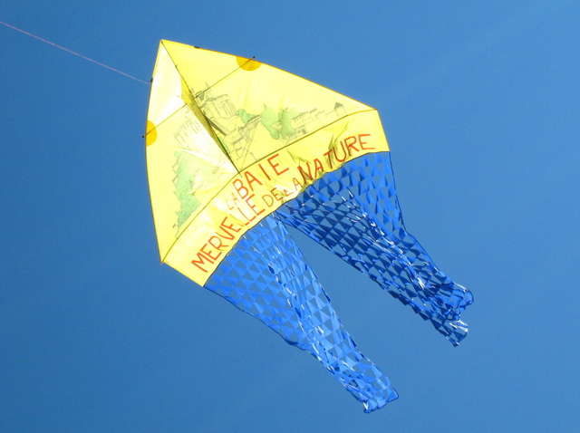
Une oeuvre pseudo-naïve, un hommage à la baie et au Mont !

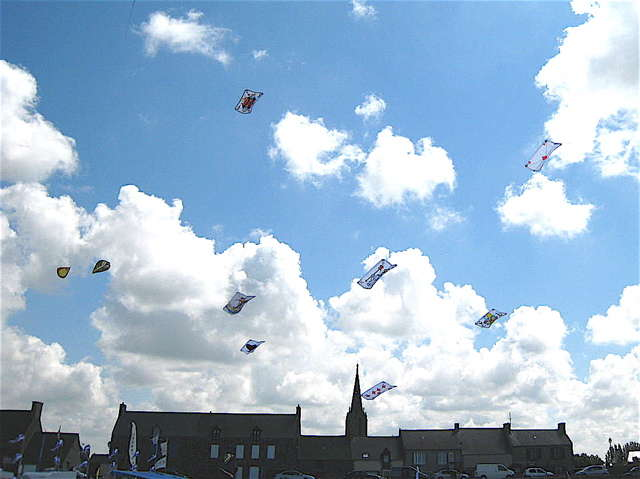
Oeuvre collective du CVCC : les cartes à jouer, chacun la sienne (ou plusieurs), réalistes ou inventées se déploient pour un envol simultané...

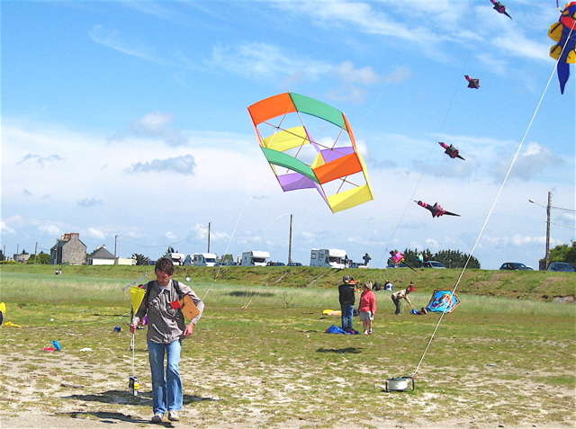
Daniel Crinier revient de faire de la photo avec son superbe Calomil !

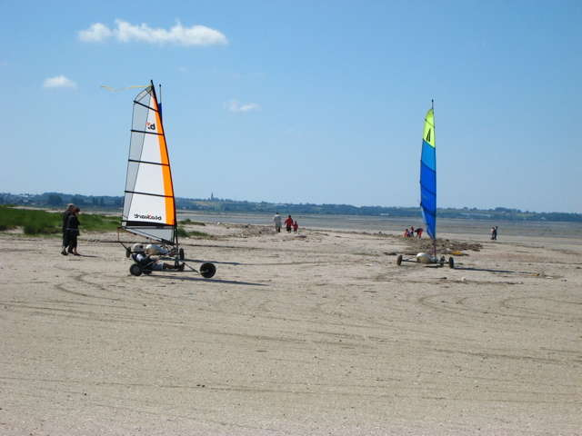
Les volontaires se relaieront toute la journée sur le Blo-kart. Ce qui intéresse Maxime (le fils de Jean-Michel le pirate), ce sont les tête-à-queue en dérapage !

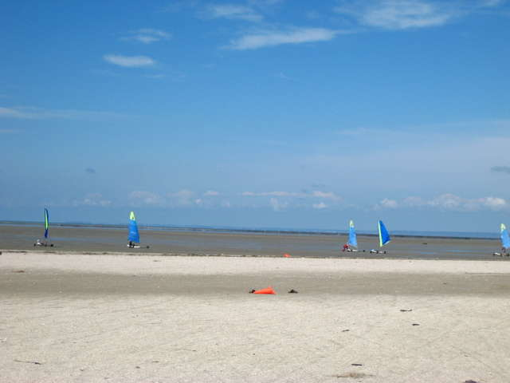
L'Ecole de Chars, elle, a tracé un parcours, mais il déborde un peu sur la lise, et au premier passage, ils se sont tous en... lisés jusqu'au moyeu !

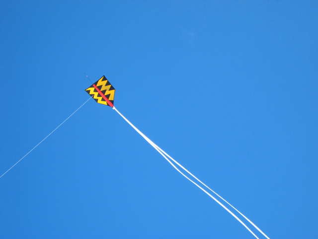
Un beau Pipa non-combattant, avec deux grands cerques blancs !

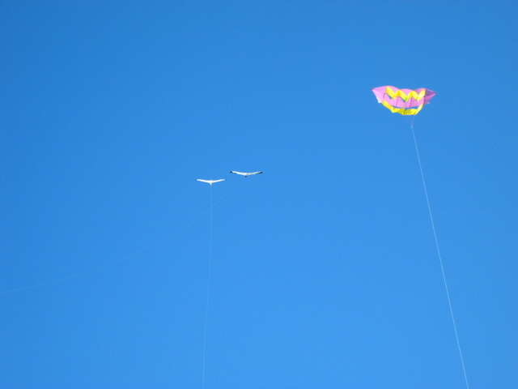
Avec Jean-Marc, nous effectuons un petit rapprochement, mais à 200 m de haut, c'est un peu osé (au sol, nous sommes à 40 m l'un de l'autre!) et Jean-Marc s'écarte vite ensuite...

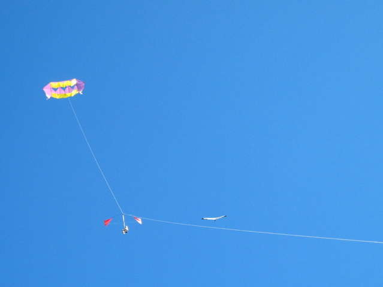
Christian Bécot fait de la photo sous son Wassèges (modifié, bien sûr, il modifie toujours...)...

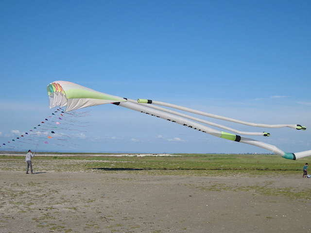
Vierzon a fait voler son gigantesque flow-form. Même si le vent n'est pas trop fort, Jacques a du mal à le descendre !

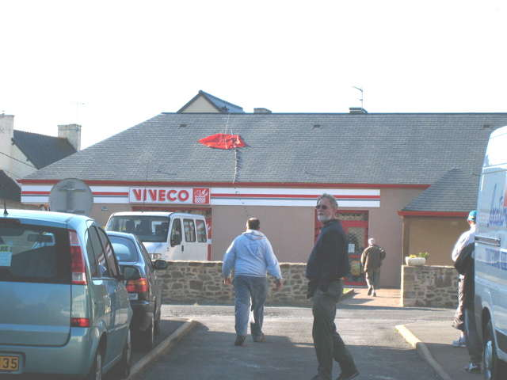
On appelle à la salle pour le dîner. François n'hésite pas et envoie son V13 directement sur le toit du magasin d'en face ! Après quelques efforts, on le laissera là pour la nuit, les filles nous réclament... pour l'ouverture des portes !

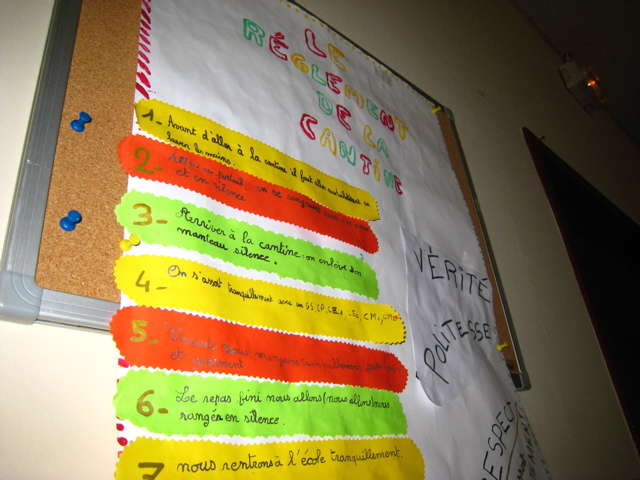
Dans la salle, le règlement est affiché et nous attend...

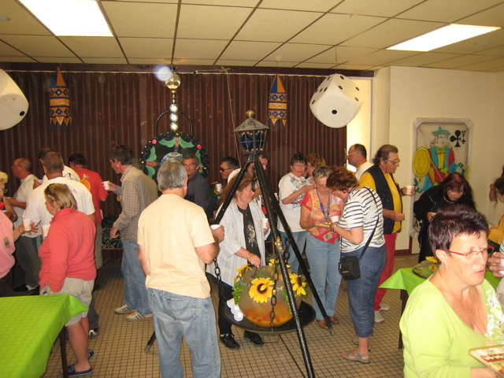
Claudine nous attend avec, dans l'aquarium aux marguerites, un punch solide qu'elle verse généreusement ! Claude a fait des prodiges de déco dans le thème des jeux...

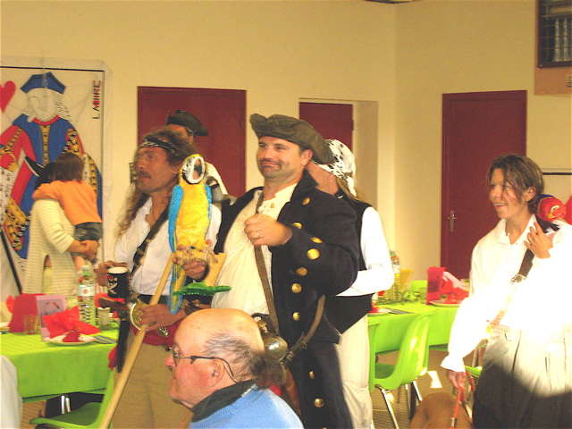
Les Pirates font une entrée en costume très remarquée ! Jean-Claude fait un personnage très crédible, avec son perroquet animé et parlant...

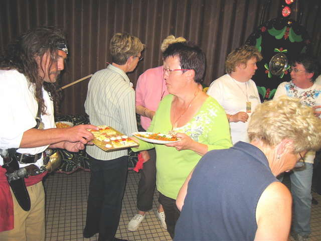
Les membres du CVCC en mettent un coup, et refusent qu'on fasse quoi-que-ce-soit pour les aider...

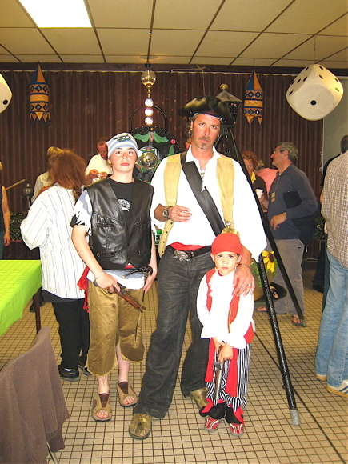
Jean-Michel a déguisé toute la famille !

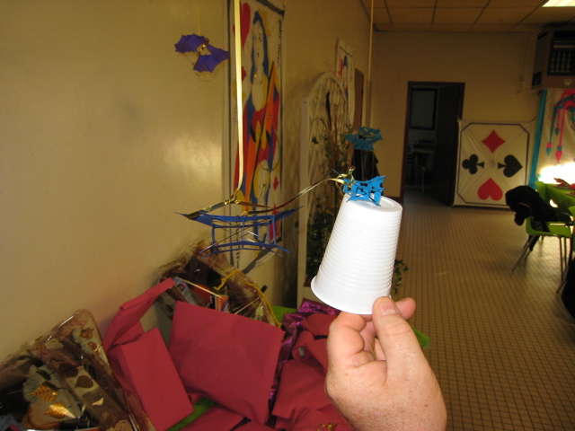
Philippe a réalisé de minuscules Codys, et il en offrira à la fin de la séance à des cervolistes méritants (moi, par exemple...) !

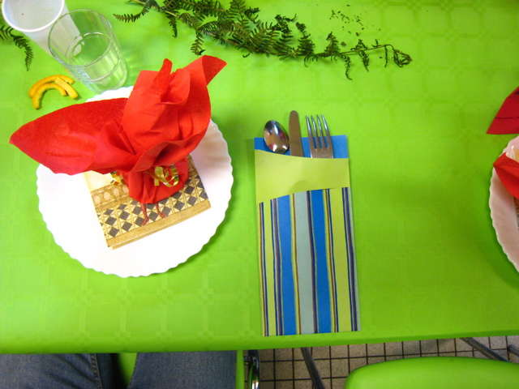
Le couvert a été préparé avec un soin extrême : nappe tapis vert, serviette dans le thème, pochette à couverts, bourse pleine d'écus (enfin, d'Euros en chocolat) !

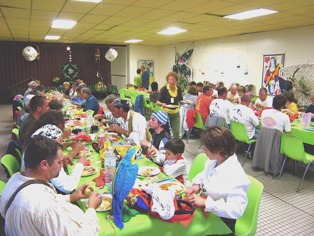
Ca fait une belle salle, et tout le monde est servi à la place !

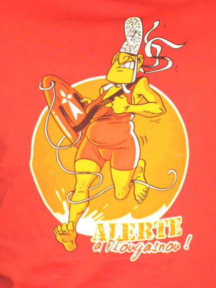
Patrick L'Higuinen portera tout le week-end des T-shirts décorés breton, comme celui-ci qui montre la Pamela Anderson Bigoudenne !

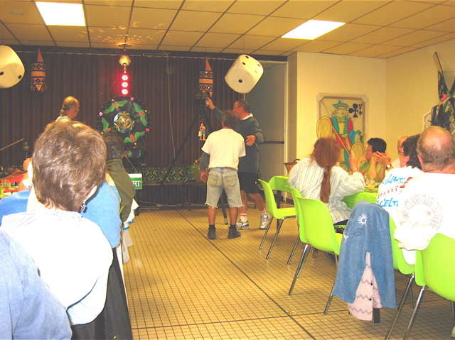
Fil rouge de la soirée : la loterie. Tout le monde a d'ailleurs un lot, il y a même des Gros Lots (consommables...), mais la roue de Claude ne tombe pas souvent dessus, il faudra improviser un tirage spécial !

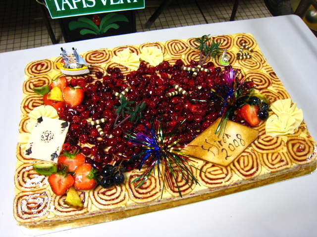
Le repas est couronné par un magnifique gâteau bavarois au nougat !

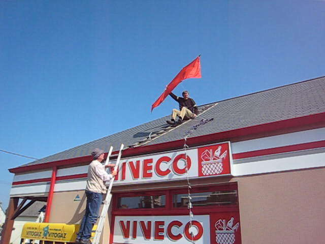
Dimanche matin, première tâche : le V13 de François en panne sur le toit ! Il n'y aura pas trop de boulot : monsieur Viveco a une échelle, et un voisin apporte une échelle de couvreur pour marcher sur les ardoises sans les casser !

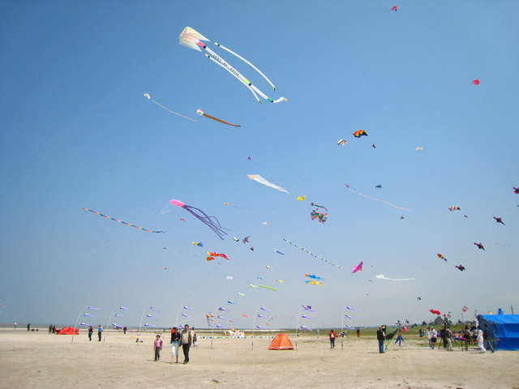
On annonçait moins de vent qu'hier, mais il y en a plutôt plus, il montera à 35 km/h en fin d'après midi, toujours de la mer. Alors, ça vole, et serré !

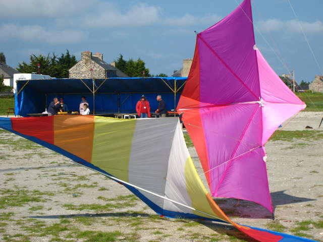
Vent léger et régulier au départ, on peut voler bas et proches... Mais faut pas exagérer ! Les 2 François n'ont plus qu'à démêler...

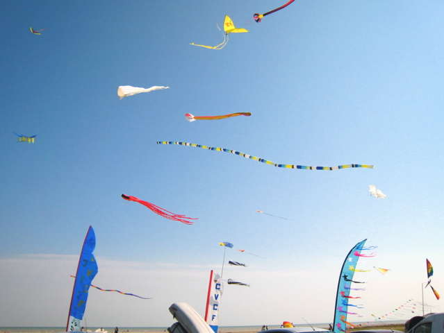
Le vent monte, c'est quand même un peu turbulent, les queues s'agitent dans tous les sens...

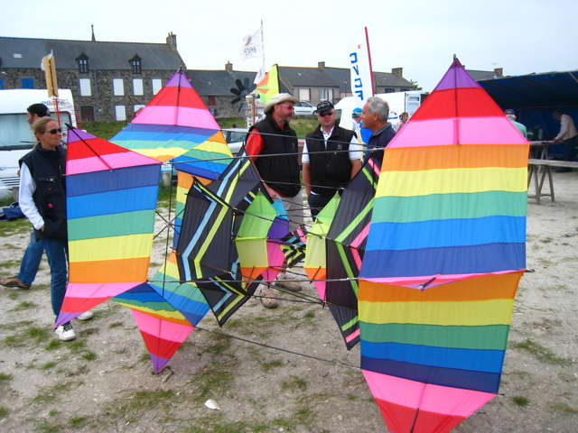
Le Roto de Joël est au sol, les 4 rotors emboîtés se cognent les uns aux autres par vent trop fort...

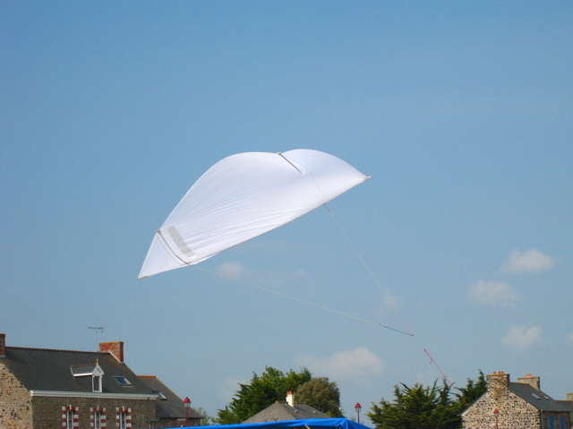
Jean-Claude a modifié son pseudo-Rokkaku en montant une vergue avant libre.

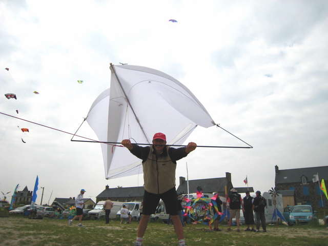
Mais il a utilisé des bouts de tube une peu fins, et ça casse, bien symétriquement...

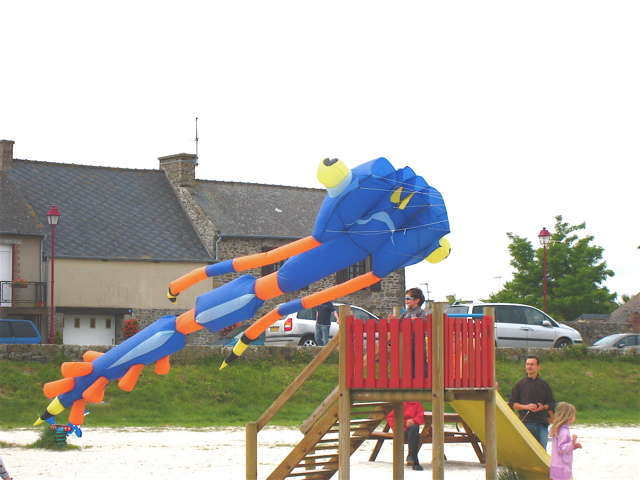
On revoit des 2 lignes gonflables disparus depuis un moment, avec lesquels leurs propriétaires caressent les enfants !

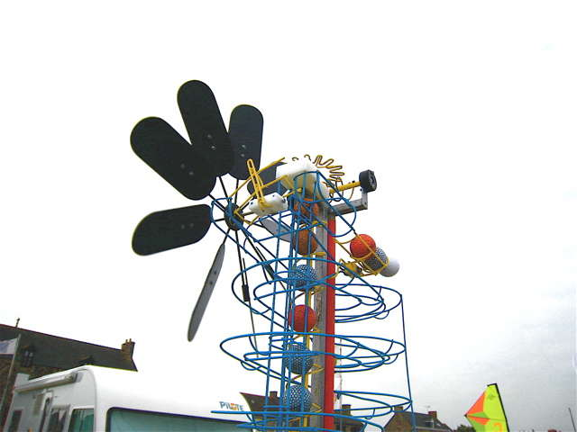
Joël a installé ses roule-baballes dont un que je n'avais pas bien détaillé : une balle va à droite, la suivante à gauche et se stocke jusqu'à ce que la troisième déclenche un petit train groupé !

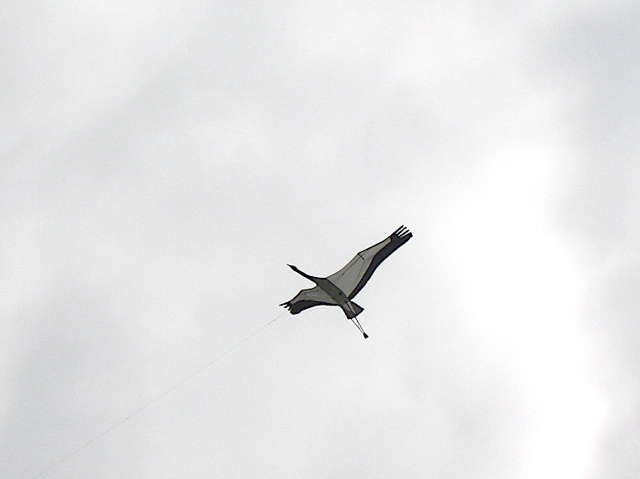
J'ai fait voler ma grue, je suis content, elle a bien volé jusqu'à 35 km/h de vent !

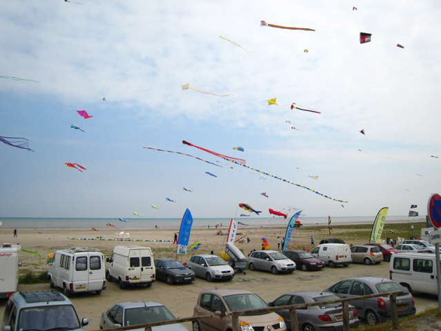
Il y a eu un passage couvert, mais ça s'est redégagé ensuite. Le parking est bien garni, ainsi que les 2 bas-côtés de la route...

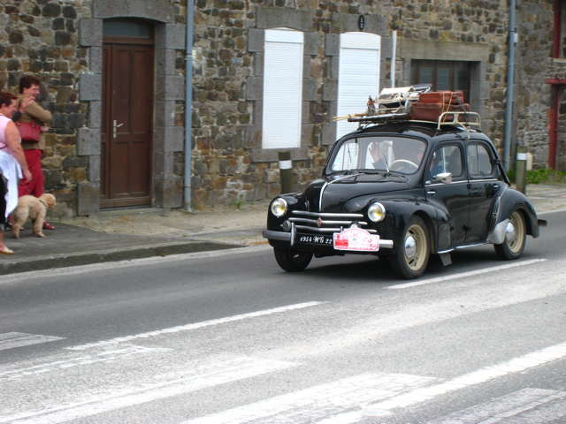
Une parade de voitures anciennes est passée sur la route, à grand renfort de Klacksons ! D'abord une 4 pattes...

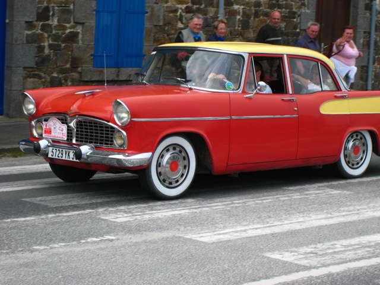
Puis une Américaine française de luxe, la Beaulieu de Simca !

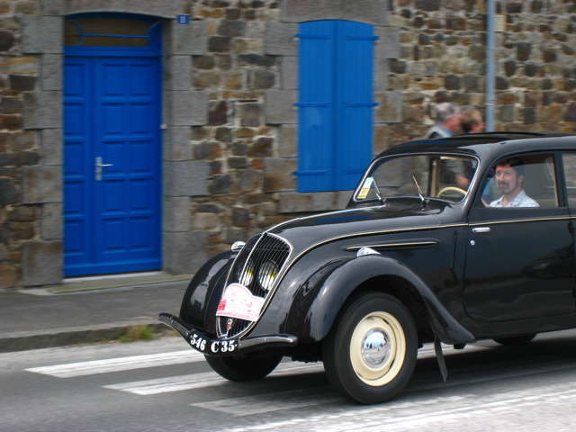
Et même une 202 Peugeot qui ne date pas d'hier !

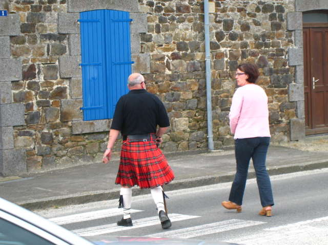
Il y a même eu des visiteurs qui ont traversé la Manche !

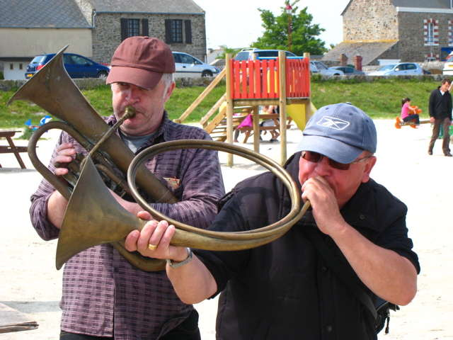
Un fana a apporté des cuivres qui ont un peu souffert, mais encore jouables. Tout le monde s'essaie à souffler dans le cor, pas si facile...

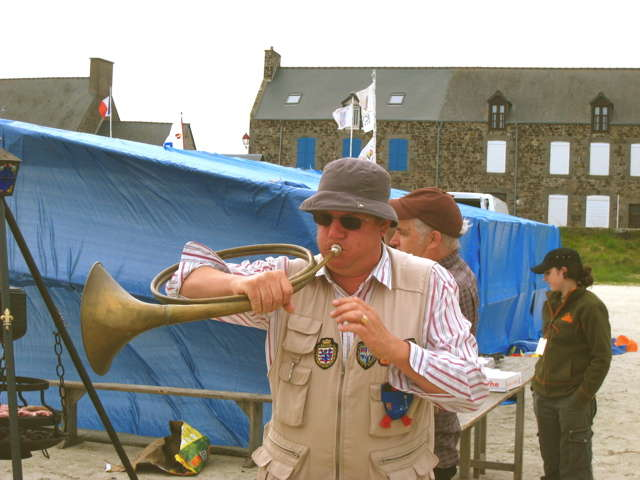
Le Président ne peut pas reculer, avec son coffre. Il souffle fort, mais rien ne sort, bizarre !

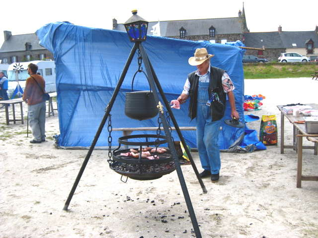
Claude a monté son barbecue d'escouade et a passé la matinée à nous cuire des saucisses et des côtes de porc ! Tout est précuit, mis au chaud dans la marmite, et re-grillé un coup au moment de servir...

Déjeuner sous le barnum, à l'abri du vent et du soleil. C'est plus que largement prévu, on n'aura pas faim cet après-midi !

Bon, on va revoler. J'ai admiré de loin ce bel insecte (papillon ?) que je n'ai pas pu détailler...

Le ciel est toujours bien meublé, de formes diverses et variées, colorées ou non !

Jean-Michel, après le buggy à cerf-volant, a appris le Blo-kart après un briefing d'une minute trente secondes. Il s'y est vite adapté et fait des runs sur deux-roues !

Claude a fini de ranger son barbecue et a pu lancer un de ses cerfs-volants celtes inoubliables !

A propos de queues, celle-ci, tournant à la gloire de l'Europe, est d'une incroyable longueur !

Christian Bécot sort encore plus de queues à chaque festival. Il faut dire que Minoli en a ramené un container du Japon !

Une bande de joyeux lurons fait voler une bâche, dans un vent pourtant costaud... Ca la fait bien voler, mais il faut cramponner !

Bon, le soleil est encore haut quand même, mais là-bas, il pleuviote un peu, on a eu de la chance ! Ben, dépêchons-nous quand même de ranger ce qui reste, les tables et leurs tréteaux, les bancs, le barnum avec ses bâches et ses armatures en tubes à résister aux tempêtes !
Hirel : Une préparation terrible du CVCCeltique pour rendre tout le monde heureux, mais le sourire permanent... Une belle surface, du vent de mer et du soleil, le bonheur !